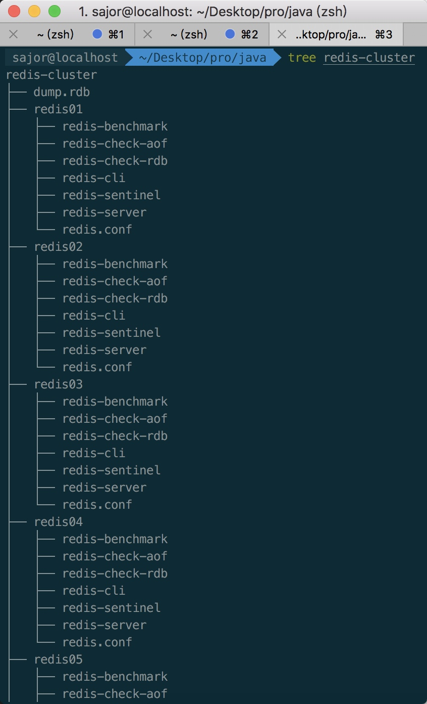
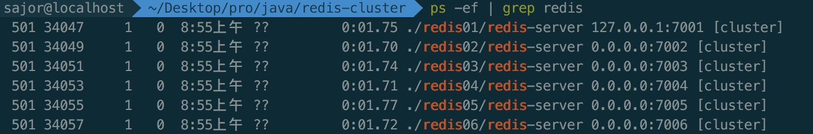

首先安装redis
brew install redis
将/usr/local/redis/bin
建立redis-cluster文件夹，复制六份， 三主三备份， 分别叫redis01-redis-06

将每个文件夹中的redis.conf都修改一下
例如： redis01/redis.conf
port 7001
cluster-enabled yes
cluster-config-file nodes_7001.conf
cluster-node-timeout 15000
pidfile /var/run/redis_7001.pid
redis02-redis06 的配置文件参照01的配置，将其中7001都改为2-6即可。
编写bash脚本启动
./redis01/redis-server ./redis01/redis.conf
./redis02/redis-server ./redis02/redis.conf
./redis03/redis-server ./redis03/redis.conf
./redis04/redis-server ./redis04/redis.conf
./redis05/redis-server ./redis05/redis.conf
./redis06/redis-server ./redis06/redis.conf
运行后查看进程
ps -ef | grep redis

安装ruby
brew install ruby
到rubypems.org下载redis工具，也可以直接wget
brew install wget
wget http://rubygems.org/downloads/redis-3.3.0.gem
gem install -l redis-3.3.0.gem
创建集群
./redis-cli --cluster create 127.0.0.1:7001 127.0.0.1:7002 127.0.0.1:7003 127.0.0.1:7004 127.0.0.1:7005 127.0.0.1:7006 --cluster-replicas 1
报错
[ERR] Node 127.0.0.1:7001 is not empty. Either the node already knows other nodes (check with CLUSTER NODES) or contains some key in database 0.
连接到每个redis 运行
flushdb
Node is not empty
运行fix
./redis-cli --cluster fix 127.0.0.1:7001
cluster命令
cluster info
cluster nodes
参考：redis集群搭建（非常详细，适合新手）
Redis 5.0.3集群搭建
本文由 Sajor
创作，采用 知识共享署名4.0 国际许可协议进行许可
本站文章除注明转载/出处外，均为本站原创或翻译，转载前请务必署名
最后编辑时间为: 2019-12-04T10:37:23+08:00